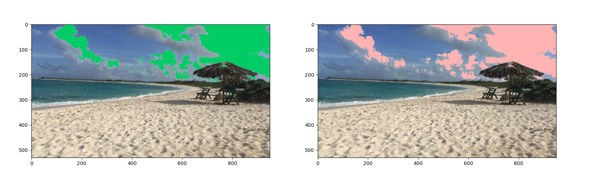
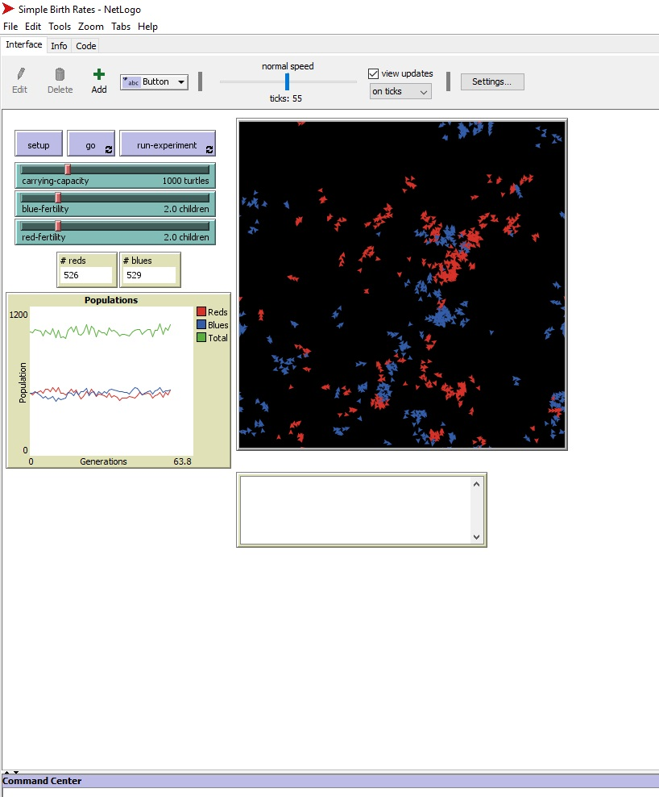

This is my Portfolio Page!

MIT App Inventor Project

The picture shown above is for an App that was made in the MIT app inventor. This app is a new and improved shopping list (or to do list) that can be used whenever you're heading out and you have a lot of things you need to get. Whatever items you need you just type in the text box and then click enter. Your items will appear on a list. As you are shopping and find things that are on the list, all you have to do is click on that particular item and it will delete off of your list. On this app you also have music playing if you what to put in some earbuds and listen to some good songs while shopping. The song can be paused or stopped at any given time, and below those buttons you will see a slider for the volume. Enjoy!
HSM 2.0 Python
Math practice problems
Above is the math problems practice game that we created in canopy (shown in the first picture), and below that is the actual game to play! It includes 10 math problems that range from kindergarten level to 9th grade. After you have completed those 10 questions you have the option of completing 2 challenge questions at the calculus level. Have fun!
Distorted Imaging practice

The image shown at the very top is the original copy of the beach picture that we used. The image seen underneath is the distorted image. We were able to duplicate the photo (which is why there are 2 distorted images on the right and not just 1). We were also able to change the image size and the color of the clouds and sky. The picture down below is the canopy coding of the image.
NetLogo Simulation Simple Birth Rates

Data Anaylsis
The image shown above is a pie chart that was created in python. The question we are answering is how many people voted in the 2016 elections, and out of those voters how many voted for Trump versus how many voted for Clinton. We attained are data from an Official 2016 Preseidential general elections results made by the elections office. We used a template from PLTW as the template for are pie chart in python.